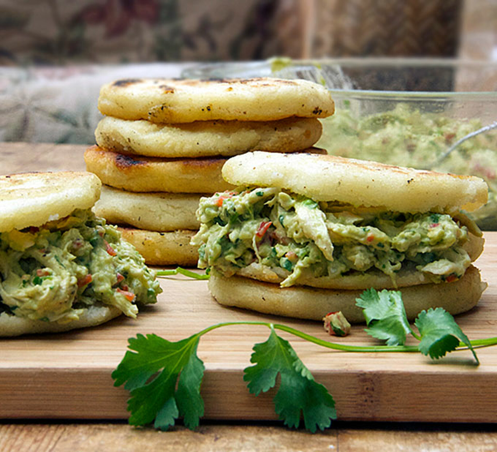
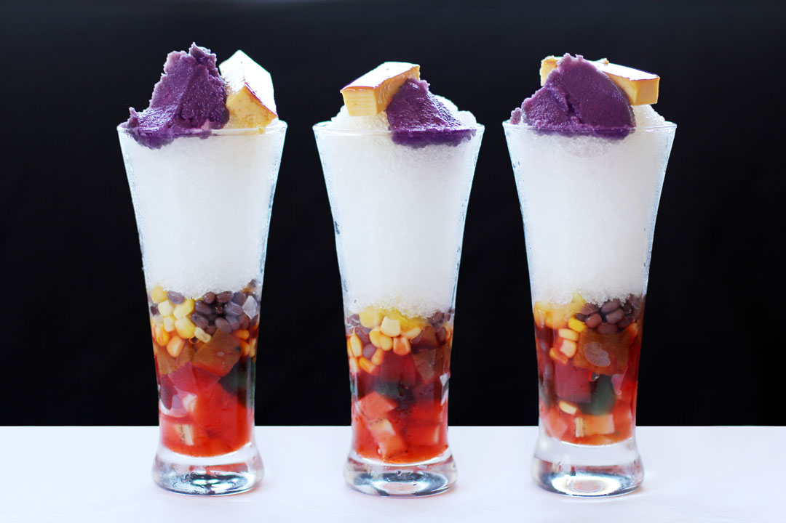
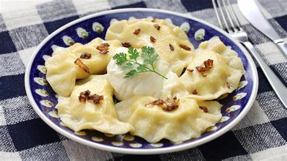
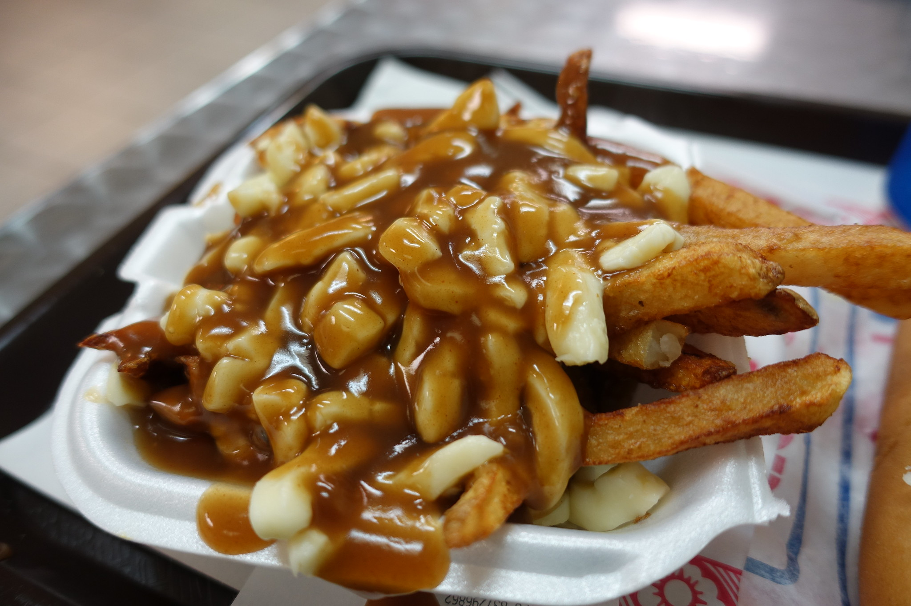

Jerk chicken, Jamaica

click image to open the recipe
Do you know a better recepie? Add hereWhen it comes to jerk chicken, there's no beating the real deal fresh from a smoky jerk hut. Recipes are closely guarded secrets, but all start with chicken on the bone slathered in a marinade of allspice, thyme, scotch bonnet chillies, ginger and spring onions. The meat is left overnight to absorb the flavours before being grilled over a pimento wood BBQ, often made from a recycled oil drum. From a beach-side bar or roadside stall, Jamaican jerk chicken is best enjoyed with rice and a cold Red Stripe beer.
Chilli crab, Singapore

click image to open the recipe
Do you know a better recepie? Add hereThe quintessential Singaporean dish, chilli crab is served by street hawkers throughout this small city-state. The invention of chilli crab is credited to Cher Yam Tian, who began serving the spicy crustaceans from a street cart in the 1950s. The crabs are served whole, stir-fried in a sweet and sour sauce of tomato, egg and (of course) chilli.
Arepas, Colombia
click image to open the recipe
Do you know a better recepie? Add hereThese round corn cakes filled with cheese or meat are a ubiquitous comida rapida (fast food) in Colombia, where there are myriad regional specialities across the country. Arepas are much thicker than tortillas and will usually be grilled or baked before being stuffed or topped with cheese. Bogota is one of the best places to try them here, they're particularly popular for breakfast.
Halo-halo, Philippines
click image to open the recipe
Do you know a better recepie? Add hereA cup of multicoloured halo-halo is the perfect way to cool down on a hot and sticky Philippine summer day. Directly translated as "mix-mix", it's an attractive sundae-like concoction of red beans, coconut, syrup and fruit. This is usually topped with ice cream evaporated milk and shaved ice.
Bunny chow, South Africa

click image to open the recipe
Do you know a better recepie? Add hereDon't worry bunny lovers, this South African snack is rabbit free. It consists of a hollowed-out loaf of bread filled with a fragrant curry (usually chicken or mutton). As you might guess, bunny chow has its origins in India, but it is now Durban's most famous street food, and no visit to South Africa is complete without trying it.
Pierogi, Poland
click image to open the recipe
Do you know a better recepie? Add hereYou'll find versions of pierogi all over Eastern Europe, but Krakow is the only city we know of that has an entire festival dedicated to this handmade dumpling. Pierogi are made from a simple dough of flour, egg, water and salt, which is then shaped into parcels and filled with meat, potatoes or cheese. They're boiled first and then fried in butter. Delicious.
Pulled pork, North Carolina, USA

click image to open the recipe
Do you know a better recepie? Add hereBBQ is serious business in the south, where yearly cook-offs see avid cooks vying to get the best from their grills. The lone star state might be the undisputed home of slow-cooked beef, but North Carolina is the place to go for smoky-sweet pulled pork, at its best doused in a rich BBQ sauce and piled into a sandwich bun.
Banh mi, Vietnam

click image to open the recipe
Do you know a better recepie? Add hereNo list of great street food would be complete without banh mi, a legacy of French colonial rule in Vietnam. The key ingredient is a thinner and crispier version of the classic baguette (made with rice and wheat flour). This is usually filled with a fresh and colourful mix of coriander, pickled carrot, daikon and meats ranging from pork belly to chicken.
Bubble Tea, Taiwan

click image to open the recipe
Do you know a better recepie? Add hereBubble, pearl or boba tea originated in Taichung, Taiwan in the 1980s. These days flavours range from a classic milky tea, often sweetened with condensed milk, to fruity creations like mango or passion fruit. The bubbles themselves are chewy little balls of tapioca sucked up through a large straw; they're strange at first but quickly addictive.
Poutine, Quebec, Canada
click image to open the recipe
Do you know a better recepie? Add hereThe ultimate late-night snack, poutine is greasy, filling street food at its best. The ingredients are simple chunky fries smothered in cheese curds and gravy. You'll find poutine all across Canada, but it's best at in French-speaking Quebec, where it originates. Sample it at diners and roadside eateries across the province.